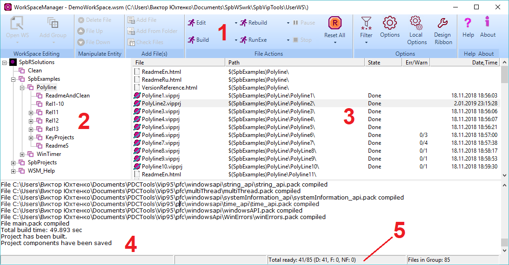

Copyright (c) Prolog Developemnt Center SPb
WorkSpace Manager
Version 2.0Application structure
The structure of the user interface of the application is shown in the figure below.

Here:
1 - Control Panel
2 - Workspace tree
3 - List of workspace files
4 - Window for displaying messages about file processing
5 - File Processing Status Bar
The control panel (1) enables
editing the workspace tree (sections WorkSpace Editing, Manipulate Entity),
add and remove files from the file list (sections Manipulate Entity, File Editing),
run file operations and manage their state (FileActions section),
set
and edit the properties of operations on files and the structure of the
control panel itself (section Help About)
Workspace tree (2)
- is a user-defined logical structure;
- not associated with the file structure;
- Allows you to structure a set of workspace files and easily edit this structure.
List of workspace files (3)
- always shows a list of files associated with the workspace tree node
- contains all files related to the underlying nodes of the workspace tree (if any)
- always processed top to bottom
- contains
information about the processing status of the file, the presence and
nature of processing errors and the time of the last state change
Message Display Window (4)
- displays exception messages when handling a file
- displays the messages of the application that is currently processing the file
File Processing Status Bar (5)
- shows the name of the file currently being processed
- shows the total file processing total number of files, the number of processed files, and so on.
- shows
the number of files represented in the list of workspace files
belonging to the selected node in the workspace tree
Change interface language
The
user interface language is determined by the choice of the current
language in the settings dialog and the definitions in the file SpbVipTools\Bin\LanguageWSM.xml.
Definitions
of language phrases for the user interface must be given before
selecting the current language in the settings dialog.
An example of the definition of language phrases is given below.
<row10 comment = "Central bottom StatusBar">
<eng> Total ready </ eng>
<rus> Всего готово </ rus>
</ row10>
The key to finding the phrase is the name of the tag (here it is row10). The Comment attribute is explanatory and can be any phrase.
The set of languages currently supported should be defined in the xml phrase
<lng dk = "Dansk" eng = "English" rus = "Russian" />
Accordingly, the attribute name (dk, eng, rus) is used to indicate the translation of a phrase in the file SpbVipTools\Bin\LanguageWSM.xml, and the attribute value appears as a menu item in the settings dialog.
Using the definitions of the SpbVipTools\Bin\LanguageWSM.xml file, you can set denotations that are convenient for you or determine the language that is most comfortable for you.
To change the language
- call the settings dialog (button "Options" of the control panel)
- select the Misc panel

- In
the list of available languages (UI Lnaguage), select one of the
languages defined in the file SpbVipTools\Bin\LanguageWSM.xml.
The interface language changes immediately upon closing the dialog.
When you close the application, the installation of the selected language is saved.
Creating and opening a workspace
To create a new workspace:
- Click the New WS button or, if the Open WS value is active, the arrow below the Open WS button

- In
the file selection dialog box that opens, select the directory where
your workspace file will be located. Select the name of this file,
assigning it to the proposed .WSM extension.
- Close the dialog box.
To open an existing workspace:
- Click the Open WS button or, if New WS is active, the arrow below the New WS button.

- In
the file selection dialog box that opens, select the directory where
your workspace file is located. Select the file with the .WSM extension.
- Close the dialog box.
Control panel
The location of control icons, their grouping can be changed by the panel editor, which is called by the Design Ribbon icon.